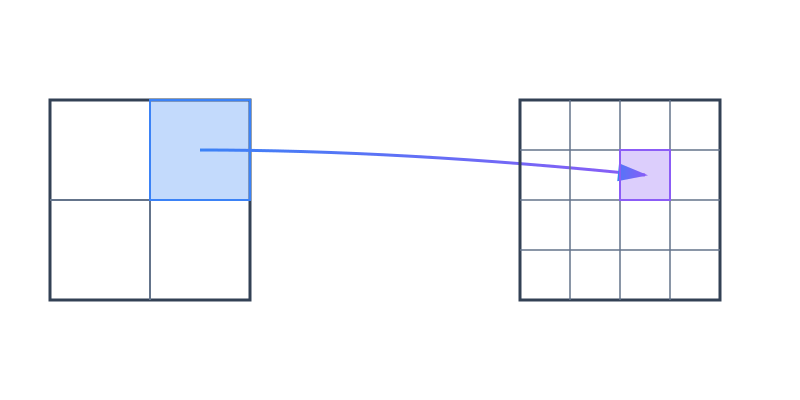

Intuition
Fractal compression tries to exploit self-similarities inside an image. Natural images often contain repeated structure: a smaller patch can look like a contracted version of a bigger patch somewhere else in the same image.
The basic idea is to store those relationships instead of storing explicit pixel values directly. Fractal compression tries to describe the image by a collection of rules that map larger source patches onto smaller target patches.
The Mandelbrot set is a classical example of a fractal that exhibits self-similarity.
It turns out that many natural images also contain self-similarities, and fractal compression tries to exploit those to store the image in a more compressed way. More precisely, if we can find self-similarities that represent the image well, then they can be used to define a global transformation on image space whose fixed point is the original image.
Math Behind Fractal Compression
I find it easiest to start with a conceptual picture of the algorithm before diving into the details. But if you are not interested in the math, you can skip directly to the implementation section.
For simplicity, we model an image as a single intensity channel vector \(x \in [0, 1]^n\) with \(n = H \times W\), and we write \(\mathcal{I} = [0, 1]^n\) for the image space. A key concept used in fractal compression is a contraction: a transform \(f : \mathcal{I} \to \mathcal{I}\) such that \(|f(x) - f(y)| \leq \lambda |x - y|\) for some \(\lambda < 1\).
The key insight is that, by the Banach fixed-point theorem, every contraction has a unique fixed point \(x^* \in \mathcal{I}\) satisfying \(f(x^*) = x^*\). Fractal compression exploits this by storing a contraction whose fixed point is the image, instead of storing the image directly.
The Banach fixed-point theorem gives us a little bit more than a unique fixed point: given a contraction \(f\), the following iteration scheme converges exponentially to that fixed point from any starting point:
$$x_{t + 1} = f(x_t)$$
$$|x_t - x^*| \leq \lambda^t |x_0 - x^*|.$$
Practically, this means that in fractal compression, once we have stored \(f\), we can start from any random point \(x_0\) and recover the fixed point \(x^*\) by iterating \(f\). Typically only a handful of iterations are required to obtain a good reconstruction of \(x^*\), thanks to the exponential convergence.
Implementation
In practice, to find a contraction \(f\), we subdivide the image into smaller target patches called range blocks and larger source patches called domain blocks.
We do not actually find one single contraction all at once. Instead, for each range block we search over all domain blocks and find the local contraction that matches it best. Concretely, for every candidate domain block we downsample it, optionally apply a symmetry, and then fit an affine correction; whichever choice gives the best match becomes the local contraction for that range block. Those local contractions are the building blocks from which the global map \(f\) is assembled.

The compressor below works on \(512 \times 512\) images with \(4 \times 4\) range blocks and \(8 \times 8\) domain blocks. For each range block, it searches over candidate domain blocks, downsamples them, and evaluates the eight planar symmetries so that rotated and reflected variants are also available.
best_match = None
for each domain block D:
D_small = downsample(D)
for each symmetry S:
candidate = apply_symmetry(S, D_small)
(a, b) = fit_affine_parameters(candidate, range_block)
error = L2_error(a * candidate + b, range_block)
keep the candidate with the smallest errorIn the RGB demo, the domain block and symmetry for each range block are chosen first on luminance. With that geometry fixed, the demo then fits separate affine corrections for the red, green, and blue channels. During decompression, the same geometry is applied to all three channels while the per-channel affine parameters restore color. Starting from random RGB noise, repeated application of the mapping converges toward the stored fixed point.
x = random_image()
for t in 1..T:
x_next = empty_image()
for each range block R:
D = stored_domain_block(R)
D_small = downsample(extract_block(x, D))
candidate = apply_stored_symmetry(R, D_small)
write_range_block(x_next, R, apply_stored_affine(R, candidate))
x = x_nextThe animation below walks you through how fractal compression and decompression work visually.
Visual Walkthrough
LoadingLoading Lenna.
Demo
The nicest way to understand an algorithm is usually to try it. Choose an image, compress it into an RGB block mapping, and then watch the decompressor recover it from random color noise.
Compress
Decompress
Comparison to JPEG
Maybe you are wondering how fractal compression compares to JPEG, and why it is not widely used today. From what I found, the main reason seems to be that its reconstruction quality is generally not quite as good as JPEG at the same compression ratio.1
One other weak point of fractal compression is that running the encoder, that is, finding good fractal codes, is computationally very expensive.23 I have not found a rigorous apples-to-apples comparison against JPEG, and I am not aware of a production-optimized fractal coding library that would make such a comparison fair. Since the encoder search is highly parallel, it would be interesting to see how a modern GPU-accelerated fractal codec would compare against existing highly optimized JPEG implementations.
Notes
- Cheung and Shahshahani, A Comparison of the Fractal and JPEG Algorithms (1991).
- Truong et al., Fast fractal image compression using spatial correlation (2004).
- Wang et al., Fast sparse fractal image compression (2017).